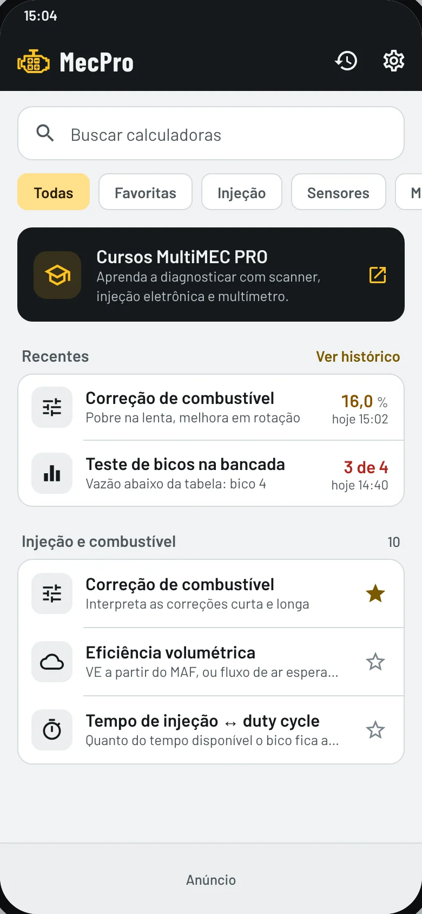
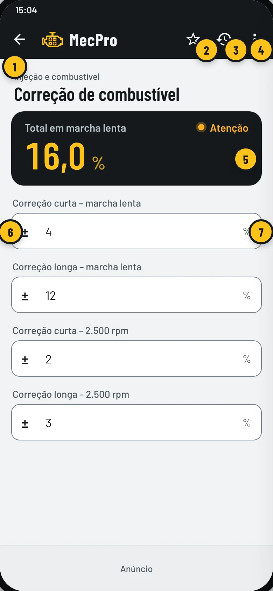
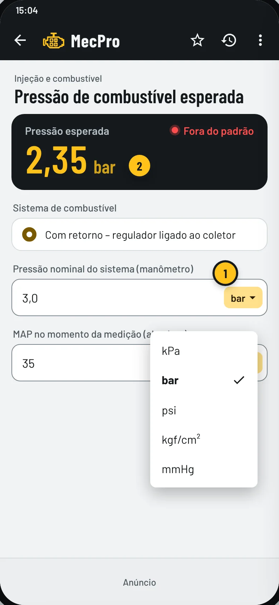
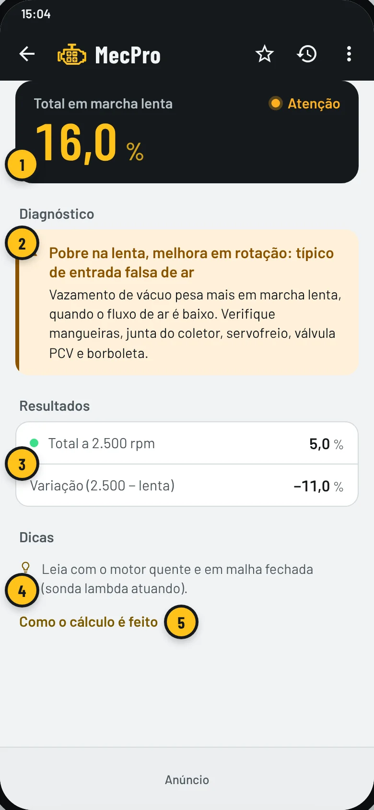
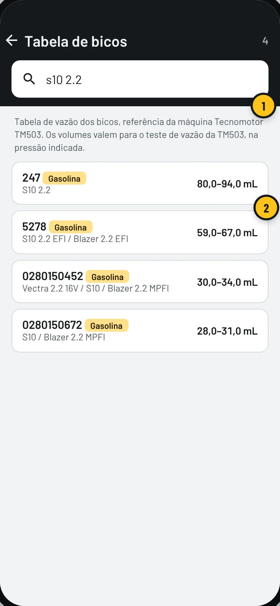
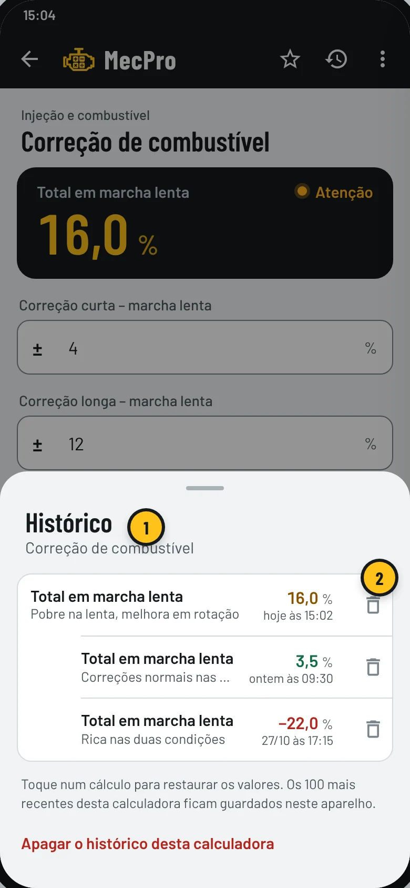
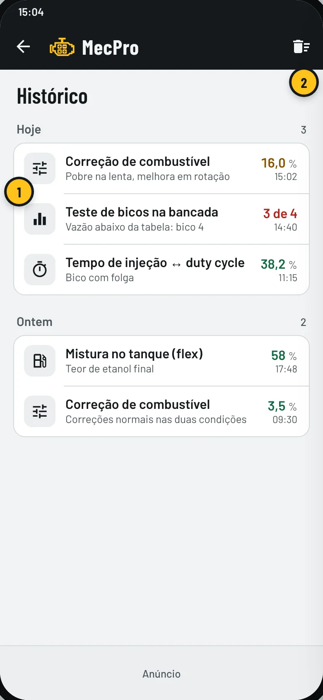
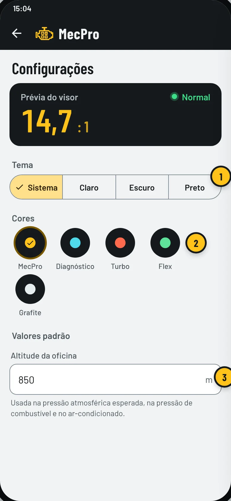

Aprenda a usar o MecPro em poucos minutos
São calculadoras para o dia a dia da oficina: correção de combustível, eficiência volumétrica, lambda, teste de bicos com tabela, sensores, elétrica, ar-condicionado e mais. Você digita o que o scanner mostra e o app explica o que o número significa.
- Funciona sem internet
- Feito para quem usa scanner
- Histórico de 100 cálculos por calculadora

Começar
- Instale o MecPro Calculadoras pelo Google Play. No celular, o ícone aparece com o nome MecPro.
- Na primeira vez, abra Configurações (engrenagem no alto) e informe a altitude da sua oficina. Ela é usada nos cálculos de pressão atmosférica, pressão de combustível e ar-condicionado.
- Confira o teor de etanol da gasolina comum. O padrão é 32% (E32, em vigor desde 01/08/2026).
- Pronto: escolha uma calculadora na tela inicial.
O que tem no app
Injeção e combustível
Correção de combustível, Eficiência volumétrica, Lambda ↔ A/F (flex), Tempo de injeção ↔ duty cycle, Pressão de combustível esperada, Dimensionamento de bico, Vazão do bico × pressão, Teste de bicos na bancada, Mistura no tanque (flex), Etanol ou gasolina?
Ver 10 calculadoras →Sensores
Pressão atmosférica, MAP e vácuo, Sensor de temperatura (NTC), Pedal e borboleta (2 pistas), Sonda lambda convencional
Ver 4 calculadoras →Motor
Cilindrada, Taxa de compressão, Compressão dos cilindros, Torque ↔ potência, Velocidade média do pistão
Ver 5 calculadoras →Elétrica
Bateria, partida e carga, Consumo parasita, Queda de tensão (teste), Bitola de fio e fusível, Lei de Ohm e potência
Ver 5 calculadoras →Oficina
Ar-condicionado: pressão × temperatura, Torquímetro com extensão, Torque de parafusos (referência), Conversor de unidades
Ver 4 calculadoras →Tela inicial
Tudo começa aqui. As calculadoras ficam separadas por assunto e você encontra qualquer uma pela busca.
- Busca. Digite parte do nome ou do assunto: “lambda”, “bico”, “bateria”, “torque”. Acentos não importam.
- Categorias. Filtre por Injeção, Sensores, Motor, Transmissão, Elétrica ou Oficina. Arraste para o lado para ver todas.
- Cursos MultiMEC PRO. Atalho para os cursos de diagnóstico com scanner, injeção eletrônica e multímetro.
- Recentes. Os últimos cálculos feitos. Toque em um para abrir a calculadora com os mesmos valores.
- Favoritas. Toque na estrela de uma calculadora para fixá-la no alto da lista.
- Histórico geral. Todos os cálculos guardados, de todas as calculadoras.
- Configurações. Tema, cores, altitude, teor de etanol, compra e informações do app.
Fazer um cálculo
Todas as calculadoras funcionam do mesmo jeito: você preenche os campos e o resultado aparece na hora, no visor escuro do alto. Não existe botão “calcular”.

- Voltar. Ao sair, o cálculo é guardado no histórico automaticamente.
- Favoritar esta calculadora.
- Histórico desta calculadora. Mostra só os cálculos dela.
- Menu ⋮ com salvar, limpar campos e a explicação do cálculo.
- Visor. O resultado principal e a situação: Normal, Atenção ou Fora do padrão.
- Botão ±. Troca o sinal do número. Use para valores negativos, como correção de −8%.
- Unidade do campo. Quando a unidade aparece em destaque, toque nela para trocar (veja abaixo).

Trocar a unidade
Digite o valor na unidade que o seu equipamento mostra. Não precisa converter antes.
- Toque na unidade do campo (aqui, “bar”) e escolha outra: kPa, bar, psi, kgf/cm² ou mmHg.
- Unidade do resultado. Toque na unidade do visor para ver o resultado em outra unidade.
A unidade escolhida fica guardada junto com o cálculo no histórico e volta quando você o restaura. Para conversões avulsas, use a calculadora Conversor de unidades, na categoria Oficina.
Entender o resultado
Abaixo do visor o app mostra o diagnóstico em palavras, os valores calculados e dicas de medição.

- Visor: o resultado principal (aqui, a correção total de 16%) e a situação.
- Diagnóstico: o que o número quer dizer e onde procurar o defeito.
- Resultados: os outros valores calculados, cada um com a sua situação.
- Dicas: cuidados na hora de medir para não tirar conclusão errada.
- Como o cálculo é feito: a fórmula e as faixas usadas, para você conferir.
Teste de bicos com a tabela
A calculadora Teste de bicos na bancada traz a tabela de vazão de referência da máquina Tecnomotor TM503, com 476 bicos. Ao escolher o bico, o app já preenche o volume esperado, a resistência, a pressão de teste e o modo da bancada.
- Abra Teste de bicos na bancada (categoria Injeção e combustível).
- Toque em Bico de referência e procure o bico.
- Faça o teste de vazão na bancada, na pressão e no modo indicados.
- Digite o volume de cada bico e, se quiser, a resistência medida.

Procurar o bico
- Busca. Procure pelo número do bico (com ou sem pontos e espaços) ou pelo veículo: “s10 2.2”, “0280150452”, “gol”.
- Faixa de volume esperada para aquele bico no teste da TM503. Toque no bico para escolher.
Lançar os volumes
- Bico de referência: volume esperado, pressão de teste, resistência e modo da bancada. O X remove a referência.
- Volume de cada bico, na ordem dos cilindros.
- Quantidade de bicos: use − e + para ajustar.
- Visor: quantos bicos ficaram dentro da faixa da tabela.
Cada bico é comparado com a faixa da tabela (dentro = aprovado; até 5% fora = atenção; mais que isso = reprovado). O app também calcula a equalização entre os bicos aprovados: desvio de até ±5% da média é bom.
Histórico
O app guarda os 100 cálculos mais recentes de cada calculadora, só no seu celular. O cálculo é guardado sozinho quando você sai da calculadora, limpa os campos ou troca de app. Assim dá para voltar num carro de ontem sem digitar tudo de novo.

Histórico de uma calculadora
Toque no ícone de relógio dentro da calculadora.
- Lista de cálculos desta calculadora, do mais novo para o mais antigo. Toque em um para restaurar os valores.
- Lixeira: apaga só aquele cálculo.

Histórico geral
Toque no relógio da tela inicial.
- Todos os cálculos, separados por dia. Toque em um para abrir a calculadora com os valores daquele dia.
- Apagar tudo: limpa o histórico completo (o app pede confirmação).
Configurações

- Tema: Sistema (segue o celular), Claro, Escuro ou Preto (ótimo para telas AMOLED e para economizar bateria).
- Cores: MecPro, Diagnóstico, Turbo, Flex ou Grafite. A prévia do visor mostra como fica.
- Altitude da oficina: usada na pressão atmosférica esperada, na pressão de combustível e no ar-condicionado.
Mais abaixo ficam o teor de etanol da gasolina comum, a opção de apagar todo o histórico, a compra da versão sem anúncios, as preferências de anúncios e privacidade, o link dos cursos, o botão Avaliar o MecPro e as informações sobre as fontes usadas.
Versão sem anúncios
O MecPro é gratuito, com um pequeno anúncio no rodapé. O anúncio some sozinho enquanto o teclado está aberto, para não atrapalhar a digitação.
- Abra Configurações e toque em Remover anúncios.
- Confirme a compra no Google Play. É um pagamento único, sem assinatura.
- Trocou de celular ou reinstalou? Toque em Restaurar compra com a mesma conta Google.
Gostou do app?
Depois de alguns dias de uso, o app pode mostrar a janela de avaliação do Google Play. Você também pode avaliar quando quiser em Configurações › Avaliar o MecPro. Sua nota ajuda outros mecânicos a encontrar o app.
Dúvidas frequentes
Preciso de internet para usar?
Não. Todas as calculadoras, a tabela de bicos e o histórico funcionam sem internet. A internet só é usada para mostrar os anúncios, para a compra da versão sem anúncios e para abrir links (como o dos cursos).
O app conecta no scanner?
Não. Você lê os valores no scanner (MultiMEC X3 ou qualquer outro), no multímetro ou no manômetro e digita no app. Por isso ele funciona com qualquer equipamento.
Onde ficam guardados os meus cálculos?
Só no seu celular. O app guarda os 100 cálculos mais recentes de cada calculadora e nada é enviado para nós. Veja a Política de Privacidade.
Troquei de celular. Perdi o histórico?
Se o backup do Android estiver ativado na sua conta Google, o histórico e as preferências voltam junto quando você restaura o backup no aparelho novo. Sem o backup, eles não são transferidos.
Comprei a versão sem anúncios e os anúncios voltaram.
Abra Configurações e toque em Restaurar compra, usando a mesma conta Google da compra. A compra é única e vale para os aparelhos com essa conta.
O bico que estou testando não está na tabela.
Use o Teste de bicos na bancada sem escolher um bico de referência: o app compara os bicos entre si (equalização) e mostra qual está fora da média. A resistência também é comparada com a média dos bicos.
Os volumes da tabela não batem com a minha bancada.
A tabela de referência foi feita para a Tecnomotor TM503, no programa de teste de vazão e na pressão indicada. Em outra bancada o volume muda com o tempo e a rotação do teste. Nesse caso, confie mais na equalização entre os bicos do que na faixa da tabela.
Posso confiar 100% no resultado?
Os cálculos usam fórmulas conhecidas de engenharia, mas as faixas de “normal”, “atenção” e “fora do padrão” são valores típicos de mercado. Cada fabricante tem a sua especificação: use o app como apoio ao diagnóstico, não como palavra final.
Achei um erro ou quero sugerir uma calculadora.
Deixe sua avaliação ou comentário na página do app no Google Play. Todas as sugestões são lidas.
Fontes dos cálculos
As fórmulas vêm da engenharia automotiva e da física. Já as faixas de diagnóstico (normal, atenção, fora do padrão) são valores típicos de mercado, usados como ponto de partida: o manual do fabricante do veículo sempre tem a palavra final. A página Calculadoras mostra as fontes de cada cálculo.
- Heywood, J. B. — Internal Combustion Engine Fundamentals (McGraw-Hill, 2ª ed., 2018)Eficiência volumétrica, fluxo de ar, relação ar/combustível, consumo específico (BSFC), geometria do motor.
- Bosch — Automotive Handbook (Manual de Tecnologia Automotiva)Injeção eletrônica, sensores, sonda lambda, sistema elétrico, bateria e pneus: valores típicos de mercado.
- SAE J1979 — E/E Diagnostic Test Modes (OBD II)Definição dos PIDs de correção de combustível curta e longa (STFT/LTFT).
- Seyfert, K. — “OBD II Generic PID Diagnosis”, MOTOR Magazine, set. 2007Interpretação das correções em marcha lenta × rotação: entrada falsa de ar × falta de combustível.
- NOAA/NASA/USAF — U.S. Standard Atmosphere, 1976Pressão atmosférica em função da altitude.
- Bell, I. H. et al. — CoolProp (biblioteca de propriedades termofísicas)Equações de estado usadas para gerar as tabelas de saturação dos gases do ar-condicionado.
- Tillner-Roth, R.; Baehr, H. D. — equação de estado do R134a, J. Phys. Chem. Ref. Data 23 (1994)Tabela pressão × temperatura de saturação do R134a.
- Lemmon, E. W. et al. — equação de estado do R1234yf, Int. J. Thermophysics (2022)Tabela pressão × temperatura de saturação do R1234yf.
- VDI 2230 Parte 1 — Cálculo sistemático de uniões parafusadasBase da tabela genérica de torque de parafusos métricos (atrito ≈ 0,14).
- Norbar — Torque Wrench Extension CalculatorFórmula de correção do torquímetro com extensão (inclusive em ângulo).
- Notícias Agrícolas — gasolina comum passa a ter 32% de etanol (E32) a partir de 01/08/2026Valor padrão do teor de etanol na gasolina comum, usado nas calculadoras flex.
- Tabela de vazão de bicos de referência da Tecnomotor TM503Volumes, resistências, pressão de teste e modo da bancada de cada bico (476 itens).
- ISO 6722 — Cabos elétricos automotivos; resistividade do cobre (0,0175 Ω·mm²/m)Seção mínima do fio pela queda de tensão admissível.
- Modelo beta (β) de termistores NTC — folhas de dados de fabricantes de termistoresCurva resistência × temperatura do sensor de temperatura.
- Física básica — Lei de Ohm, Bernoulli (vazão ∝ √pressão), cinemáticaRelações exatas, sem faixas de diagnóstico.
- Tabelas usuais de estado de carga de baterias chumbo-ácido (convencional e AGM), a ~25 °CEstado de carga pela tensão em repouso. Valores variam um pouco entre fabricantes.